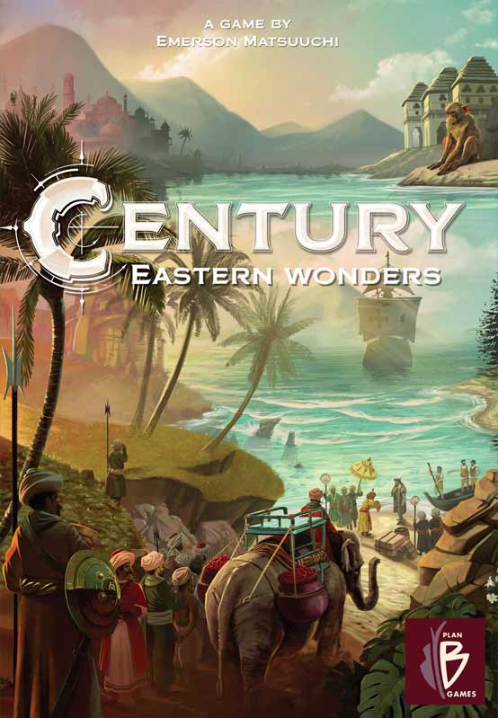
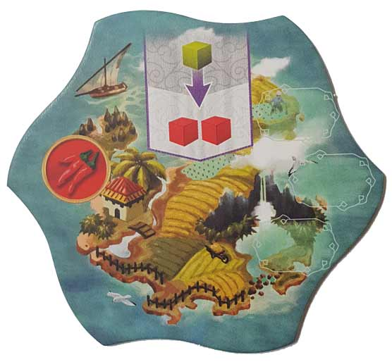
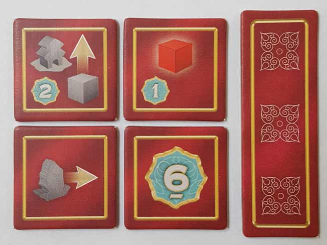
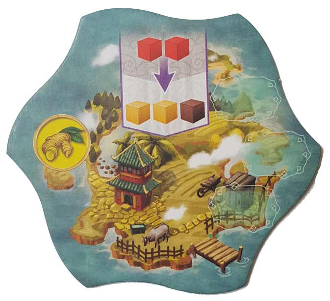
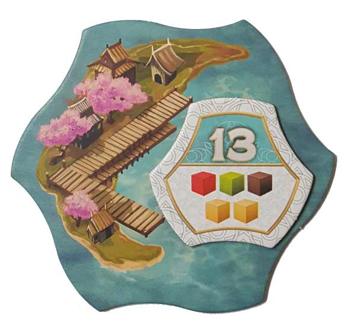
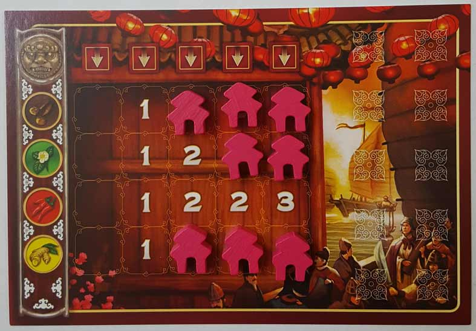
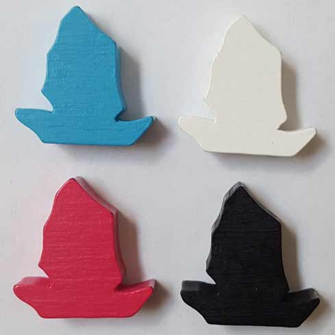

In this Century: Eastern Wonders review, D and Will take a look at the follow-up to Century: Spice Road from Plan B Games. Designed by Emerson Matsuuchi, Eastern Wonders is a grid movement, area control game for 2-4 players with a playtime of 30-45 minutes. With familiar mechanics but mechanisms that differ greatly from its predecessor, this game finds a way to stand on its own. But is it better than Spice Road, an elegantly simple board game? Well, that’s the question we answer below!

D reviews Century: Eastern Wonders
 (Author’s
note: this review is meant to accompany our gameplay video and will not
go in-depth on the game’s rules. If you’re interested in learning how
the game is played, please watch the video. It’s not bad.)
(Author’s
note: this review is meant to accompany our gameplay video and will not
go in-depth on the game’s rules. If you’re interested in learning how
the game is played, please watch the video. It’s not bad.)
In my review for Century: Spice Road, the first game of Emerson Matsuuchi’s Century Trilogy, I criticized it for not incorporating its theme enough in its mechanics. I really liked the game overall, but the whole spice trading thing felt inconsequential to the experience. Century: Eastern Wonders, the second entry to the series, takes the spice trade to the high seas and does a better job of using its similar-but-different theme. It might even be a slightly better game overall, but it does have some issues of its own that its progenitor did not. But first, the good stuff.
Eastern Wonders recycles a handful of elements from Spice Road, but the game definitely looks and plays somewhat differently. And in case you were worried – no, you do not need to own the first game in order to play the second. Unlike Spice Road, the sequel makes use of a map which is created by assembling wavy, hexagonal tiles in a pattern of the players’ choice. The rule… page does include a basic setup (used in our video) as well as some other suggestions, but you could probably make some really odd arrangements if you saw fit. Regardless, having a map to look at does more for immersion alone than anything found in Spice Road. But the game takes things even further by giving players boats with which they can sail around the islands and outposts (that they can establish). Being able to actually see your control and influence expanding throughout the game feels much better than the more abstract experience of the first game. And while proper trading between the players still, disappointingly, has yet to make an appearance in the series, there is a little bit of resource movement between players when one lands on an island already occupied by an opponent. It’s a step in the right direction.
Eastern Wonders does have a handful of minor issues, however. For starters, the map, while randomized at the start, is entirely static aside from the VP tokens on the ports being traded out. This makes sense, as islands don’t typically move or see their local flora change, but it does make trading quite a bit more restrictive than it was in Spice Road. It’s still a sort of puzzle to figure out, but your options for how you can manipulate said puzzle are far more limited. And I feel like the game could probably do with a greater number of tiles as well. One of each spice type gets removed at the start of the game, but otherwise all tiles get used, which doesn’t feel like that many. It just seems to lack the variety and flexibility of Spice Road. And while the game does a commendable job of rewarding different play-styles, there’s a blatant imbalance between the “bonus tiles” players get for clearing out columns of outposts on their boards. Pro tip: take the extra movement tile first. Always. [Video Spoilers Ahead] It’s pretty much the main reason I won the game in our video playthrough. I don’t have a good suggestion for how to fix this issue, short of just removing it from the game entirely, but it definitely needs some tweaking.
Beyond those issues, I don’t really have many other complaints about Eastern Wonders. I should note – the plastic box inlay for the components is terrible. They tried to get cute and design a tray where everything fits perfectly, but it’s not intuitive whatsoever. Honestly, it’s probably better to just throw it away and chuck all the components in the empty box, since there are no cards to worry about this time around. Otherwise, Eastern Wonders is a lot like it’s predecessor in that it’s a very fun, light game that nonetheless has a drawback or two keeping it from total greatness. And we haven’t touched the Sand to Sea bonus game yet, which uses components from both games and is supposedly more complex than either of the two standard games. I’m interested in trying it out. Anyway, if your liked Spice Road, you’ll probably like Eastern Wonders. And if you didn’t like Spice Road, I think there’s a chance you’ll like this one a bit better. It’s probably the one we’ll be returning to more often, but regardless, I’m pretty excited for the final game of the trilogy.
D’s Rating: Four Stars out of Five.
Will reviews Century: Eastern Wonders
 This
is a review of the standalone version of Century: Eastern Wonders.
Since I haven’t yet played the combined variant (that includes
components and rules from both Century games), it did not figure into my
opinions and subsequent rating.
This
is a review of the standalone version of Century: Eastern Wonders.
Since I haven’t yet played the combined variant (that includes
components and rules from both Century games), it did not figure into my
opinions and subsequent rating.
Last year’s Century: Spice Road impressed me for a number of reasons, namely its subtle and sophisticated gameplay. However, that game did feel a little basic, as if it was the beginning of an unfinished thought. Taking that into consideration, I became pretty anxious to play Century: Eastern Wonders. I needed to see if the second installment in the trilogy pushed the series forward or merely repeated what Spice Road did so well. Thankfully, it’s definitely more of the former. And while Century: Eastern Wonders feels familiar to the first game, it does more than enough to establish itself as its own singular experience.
Normally I’d start by analyzing the build quality of the components, but after releases like Azul and Century: Spice Road, I’ve come to realize that Plan B Games (the publisher) always nails it here. Eastern Wonders is no different – the components are good and do what they need to. The artwork is similarly effective, as it’s colorful, tasteful, and enticing. If I had to nitpick, I’d say that the Market tiles are just a bit too crowded, and this problem is exacerbated when the Boat and Outpost pieces cover the board. This is a very minor issue, however, and it barely affected my opinion of the game.
I don’t know why, but the gameplay in Century: Eastern Wonders surprised me a little bit. I guess my pessimistic side got the best of me because I truly expected this game to be a reworked variant of Spice Road. I’m so glad to state that this is definitely not the case, though there are some similarities. I should note though – I’m happy there are a number of similarities, as most of them only help the game excel on its own while still reminding you that it’s part of an ongoing series. For instance, players are still working toward collecting Victory Points, this time in the form of tokens instead of cards. This minuscule alteration may not seem like much, but it’s enough that it changes something while still evoking the characteristics of the first game.
Sure, going from cards to tokens is an inconsiderable change, but it’s only one of many. In fact, Eastern Wonder’s core mechanisms are completely different than its predecessor’s. Whereas Spice Road is a card drafting game, Eastern Wonders is a grid movement, area control game that features a modular board. This does mean that this game is noticeably weightier than Spice Road, but it’s not so much so that it’s no longer recognizable as a Century game. And this added weight means that the gameplay is no longer overly basic. I really enjoy the card drafting in Spice Road, but the ship movement and strategies that come with it make Eastern Wonders way more satisfying.
Speaking of strategy, there’s a boatload more of it within this game’s rules and mechanics. The ability to trade spices for other spices is now positioned on the Market tiles, and these tiles are available for everyone. This means that players now have to chart a path throughout the tiles to ensure that they gather the spices they need in order to claim a VP token. Amassing and trading spices isn’t that difficult, but unlike in the previous game, players can harry you along the way. In order to activate Market tiles, you need to place down an Outpost. If there’s already an Outpost on the tile you land on, you’ll need to surrender a spice cube to the supply to establish your own. And if you land on a tile with an opposing player’s ship, you’ll need to give them a cube as well. This may not sound that costly, but toward the end of the game, when everyone’s rushing for that final VP token, every last cube is important. I love that blocking and sabotaging your opponents is possible now. There certainly aren’t as many strategic decisions to make in Spice Road as there are here – not by a long shot.
Perhaps the biggest change to the Century series is the addition of larger player boards. Your Outposts go on these player boards, and when you remove one (of the 20) and place it, you’re making progress towards some bonuses. Each row features an increasing amount of points underneath, so if you remove your Outposts horizontally, you’ll be adding to your victory point total. Alternatively, if you clear a column of Outposts, you can select a Bonus tile. These Bonus tiles are varied – some are simply victory points, while others expand your cargo hold, and so on. In my opinion, these player boards put Eastern Wonders ahead of Spice Road. They simply bring so much to game in the way of strategy. I’m always toiling between going horizontally for points or vertically for bonuses. In many ways, the player board is a game within a game – it’s brilliant design.
Then again, not everything works as well in Century: Eastern Wonders as I would’ve hoped. Just like Spice Road, the endgame isn’t the most fulfilling. I’ve never been biggest fan of the “first player to reach this milestone” method, but I understand there’s no better way to do it here. I just disagree with the milestone, which is that the endgame triggers when a player collects four VP tokens. It really feels too low to me, whereas the cutoff in the first game (to collect 6 cards) felt much more appropriate, and I didn’t even like it that much. In our playthroughs of Eastern Wonders, I noticed that the endgame is almost always triggered too soon, when we’re just starting to get into it. It usually happens when someone gets their third VP token and another, cheaper one is added to the board nearby. That same player quickly claims it, and the game ends. It’s almost always anticlimactic.
There are a few other mechanics that didn’t do it for me like they did in Spice Road. Coming to mind, I don’t think that forfeiting spices for extra movement brings that much to the gameplay. In Spice Road, you similarly had to forfeit spices on certain cards in order to take other cards further down the row. In that game, I was always tempted to forgo snatching the card I wanted in order to go for one that was instead loaded with spices. Matsuuchi tried to make use of that mechanic again within Eastern Wonders, but I can’t say that I was ever tempted to move to a specific Market tile just because it contained a cube or two that another player left behind. Don’t get me wrong – sacrificing cubes is still useful here; just not as useful (or clever) as it was with Spice Road.
To summarize everything above, Century: Eastern Wonders is a pretty wonderful board game that definitely betters its predecessor. Sure, some of the mechanics aren’t as gratifying as they were in Spice Road, and the endgame is still rather anticlimactic. Other than that though, Eastern Wonders does nearly everything else well. I can’t imagine a more natural progression for the Century series, and that’s due to Matsuuchi’s commitment to embracing similar mechanics while also altering core mechanisms. Eastern Wonders is definitively different and can stand on its own, and yet, I still notice Spice Road within its inner workings. And because I can spot that game in there, it makes Eastern Wonders that much more impressive. If Century: Spice Road was the beginning of a thought, then Eastern Wonders is the completion of that thought. And yet, there’s still another installment coming in 2019 – my mind is blown.
I give Century: Eastern Wonders a: B+
Leave a Reply
You must be logged in to post a comment.